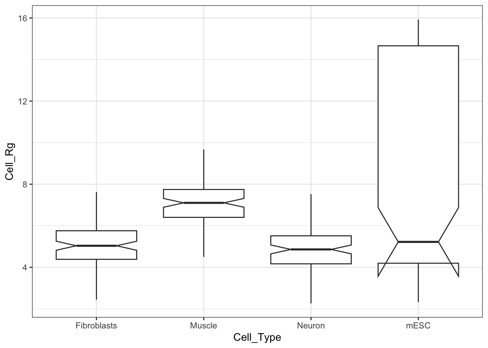
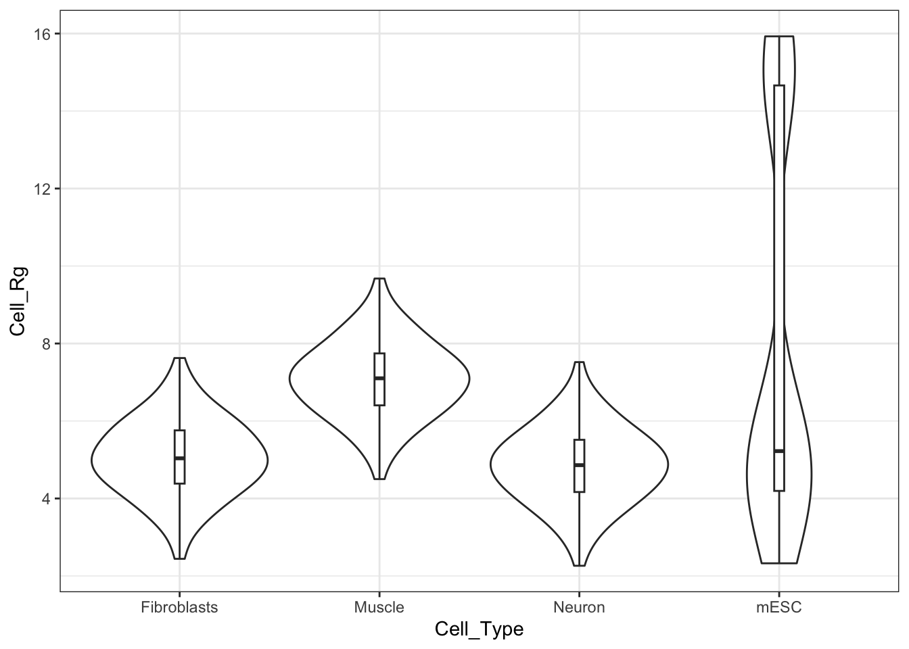
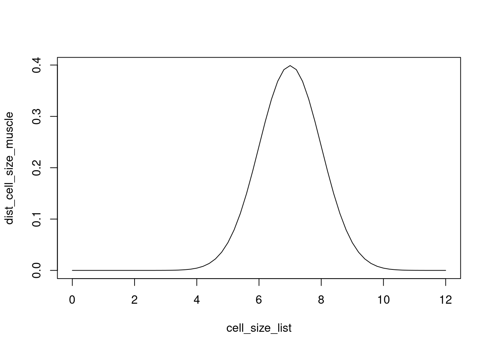
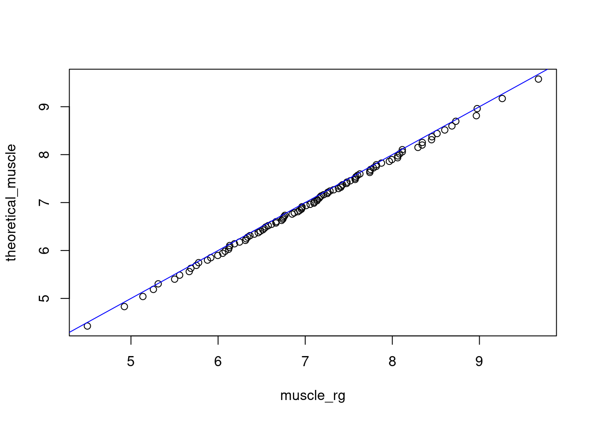

Learn to apply probabilistic thinking to biological data
An Episode in the Life of a Data Scientist*^
*All characters are made up
^All data is simulated
Matt: “Here is some microscopy data. What insight can you find in it? (Yes it is not RNA and I want you to use R not python. No, my account has not been hacked.)”
You: “What is in the data file?”
Matt: “I measured the radius of gyration (I made up this quantity for cells) and the largest length for a bunch of cells from different cell types.”
You get a brand new dataset. You are seeing it for the first time.
Ok, so Matt gave you a clean file. There are 3 columns -
Cell_Rg - possibly radius of gyration?
Cell_len - possibly largest length?
Cell_Type - self explanatory
How many data points are there?
nrow(data)
[1] 400
How do you get a feel for 400 datapoints? You cannot see trends or get “insights” directly looking at the raw data at this scale. So you need to “summarise the data” to get “Estimates of Location”
summary(data)
Cell_Rg Cell_Len Cell_Type
Min. : 2.263 Min. : 0.000 Fibroblasts:100
1st Qu.: 4.503 1st Qu.: 5.407 Muscle :100
Median : 5.477 Median : 7.290 Neuron :100
Mean : 6.173 Mean : 6.695 mESC :100
3rd Qu.: 6.751 3rd Qu.: 8.900
Max. :15.928 Max. :12.626
Let us go through these summary statistics one-by-one.
Minimum and Maximum - self explanatory
Median - midpoint when you sort that column. Let us verify.
There are 400 data points. Mid point will be between 200 and 201.
a <-sort(data$Cell_Rg)[200]b <-sort(data$Cell_Rg)[201]print(c(a, b))
[1] 5.475759 5.478244
(a + b) /2
[1] 5.477002
A more general definition of median is that it is 0.5 quantile (or 50th percentile).
So then first quartile (“1st Qu.”) would be 0.25 quantile or 25th percentile, third quartile (“3rd Qu.”) would be 0.75 quantile or 75th percentile. For 400 observations, where will the first and third quartile would be around? We can use quantile function to find out:
quantile(seq(1, 400), 0.25)
25%
100.75
quantile(seq(1, 400), 0.75)
75%
300.25
R will interpolate to get the quantile values.
quantile(data$Cell_Rg, 0.25)
25%
4.502879
quantile(data$Cell_Rg, 0.75)
75%
6.750579
Mean is the average: sum of all observations divided by the number of observations
sum(data$Cell_Rg) /nrow(data)
[1] 6.172667
But this is the mean of all observations. Let us find the mean for each cell type
library(tidyverse)
Sorted by mean Rg:
data %>%group_by(Cell_Type) %>%summarise(mean_Rg =mean(Cell_Rg), mean_len =mean(Cell_Len)) %>%arrange(mean_Rg)
Hmm, mESC seems to have changed the most. Having extreme values skew the mean is more representative of real data you will come across.
This big difference between mean and median is suspicious for mESC. So we need to see how the Rg of mESC is distributed. Histogram bins the data to give us a discretized distribution:
So obviously, there is an outlier population that is skewing the mean, but the median is not as affected by the outliers.
This distribution is also telling us that the trend in mean or median doesn’t account for the “spread” of the data. To compare how spread out the data is across the four cell types, we can use boxplots:
Notch went outside hinges
i Do you want `notch = FALSE`?

So the variability and two sided distribution is hidden by boxplots, violin plots help with that
ggplot(data) +geom_violin(aes(x = Cell_Type, y = Cell_Rg)) +geom_boxplot(aes(x = Cell_Type, y = Cell_Rg), width =0.05) +theme_bw()

With these exploratory analyses, we can hypothesize that muscle has higher Rg than fibroblasts and neurons. mESC has a complex distribution that needs further experiments, so we won’t analyze that cell type further.
How significant are differences between muscle cells and fibroblasts?
We want to ultimately answer the question: Does a given cell type have a different size than others?
Using statistical concepts, we can answer this question in many ways:
We can make an assumption of the underlying probability distribution - this gives us powerful tools to ask how different the size of two cell types are.
We could use resampling (class 2)
We could use non-parametric statistical tests (class 2)
Let us explore underlying distribution of Rg of muscle cells
# Get muscle Rg as a vector:muscle_rg <- data[data$Cell_Type =="Muscle", ]$Cell_Rg# generate histogrammuscle_rg_hist <-hist(muscle_rg, breaks =30, freq = F, xlim =c(0, 12))
A probability density function (pdf) is associated with continuous random variable.
A pdf is greater than or equal to zero at all values of x
A pdf integrates to 1
A normal distribution is an example of a pdf that occurs commonly in the world around us.
We can use the normal distribution as an example to understand how to use pdfs.
Let us assume that the muscle cell Rg is normally distributed with an average of 7 micron and a standard deviation of 1 micron. The ideal distribution would look like this:
# Use seq to create a range of numberscell_size_list <-seq(0, 12, 0.2)# Use dnorm to calculate probability at each point of the vector abovedist_cell_size_muscle <-dnorm(cell_size_list, mean =7, sd =1)plot(cell_size_list, dist_cell_size_muscle, type ="l")

Let us say you fit a normal distribution to your muscle cell Rg data, this is how it might look:
How do we see how good a fit this is? We will not go through rigorous measures of goodness of fit in this class, but we will do a quick visual check on how good a fit is using Q-Q plot.
Q-Q plot compares the quantiles of two distributions. In our case, we have the observed distribution and the theoretical distribution.
To generate quantiles of our theoretical distribution, we will use qnorm:
theoretical_muscle <-qnorm(ppoints(100), mean =7, sd =1)
Here is how the theoretical and observed numbers are distributed. We are going to plot the “quintile” on y axis and the Rg on x axis:
plot(y =ppoints(100), x = theoretical_muscle, xlim =c(4, 10), type ="l")lines(y =ppoints(100), x =sort(muscle_rg), xlim =c(4, 10), type ="l", lwd =2, col ="red")
A Q-Q plot compares each point on black and red lines at each quintile:
qqplot(muscle_rg, theoretical_muscle)abline(a =0, b =1, col ="blue")

If the points fall close to the diagonal, the two distributions are similar.
Points either falling below or above the line at the edges indicate that the tails of the distribution don’t agree.
Important note:
The two distributions being compared should be scaled to be similar. Here I generated the values of the normal distribution at the same position as that of the observed distribution.
We will next repeat this analysis for fibroblasts:
Similarly for fibbroblasts, a normal distribution could explain the underlying distribution of Rg.
First the histogram of observed values:
# Get fibroblast Rg as a vector:fib_rg <- data[data$Cell_Type =="Fibroblasts", ]$Cell_Rg# generate histogramfib_rg_hist <-hist(fib_rg, breaks =30, freq = F, xlim =c(0, 12))